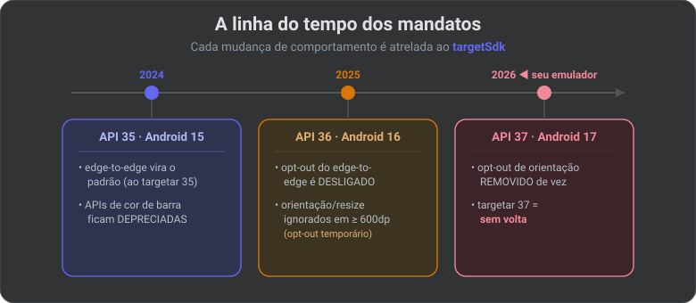
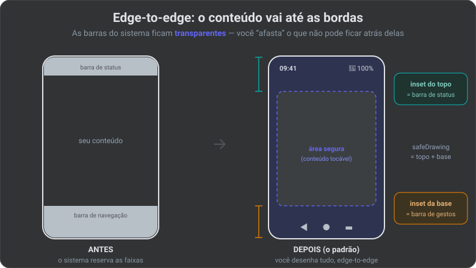

📐 Edge-to-Edge & Telas Grandes: Os Mandatos da Google (2026)
Durante anos o Android foi pensado como "um retângulo em pé, na mão". Isso acabou. Dobráveis, tablets, ChromeOS e telas ultrawide viraram maioria de mercado, e a Google passou a forçar — não sugerir — que todo app se adapte. São dois mandatos que quebram apps antigos se ignorados:
- Edge-to-Edge — seu conteúdo desenha atrás das barras do sistema (a partir do Android 15 / API 35).
- Orientação e redimensionamento livres em telas grandes — você não pode mais travar o app em retrato num tablet (a partir do Android 16 / API 36, e sem escapatória no Android 17 / API 37).
📌 Conexão com o NexusHub: hoje o projeto está em
targetSdk = 35→ o edge-to-edge já está valendo. E o emulador instalado é API 37 (Android 17) → nele as restrições de orientação já são ignoradas de qualquer jeito. Ou seja: os dois mandatos já batem na sua porta agora.
A linha do tempo dos mandatos

🧠 Termo — mandato / behavior change: uma mudança de comportamento que a Google atrela ao
targetSdk. Quando você sobe otargetSdk, seu app "aceita" as regras novas daquela versão. Por isso subir otargetSdknunca é só um número — é assinar um contrato de comportamento. (VejacompileSdk/targetSdkno artigo do SDK.)
PARTE 1 — Edge-to-Edge
O que é (e o que muda na tela)
Edge-to-edge = seu app desenha de ponta a ponta, ocupando a tela inteira, inclusive a área atrás da barra de status (topo) e da barra de navegação (base). Antes, o sistema "reservava" essas faixas e seu conteúdo começava abaixo delas.

🧠 Termo — system bars (barras do sistema): a status bar (topo: horário, bateria, notificações) e a navigation bar (base: os botões ◄ ● ▬, ou a barrinha de gestos). No edge-to-edge elas ficam transparentes e flutuam sobre o seu conteúdo.
O mandato exato
- Android 15 (API 35): ao
targetSdk = 35, o edge-to-edge é aplicado automaticamente nos aparelhos com Android 15+. - Android 16 (API 36): o "escape" temporário — o atributo
R.attr#windowOptOutEdgeToEdgeEnforcement— foi DESLIGADO. Não adianta mais tentar voltar ao modo antigo. (Ao targetar 36, ele é ignorado no Android 16.)
Tradução: edge-to-edge deixou de ser opção e virou obrigação.
O que quebra se você não fizer nada
Sem tratar, partes da UI ficam atrás das barras: um botão no rodapé fica embaixo da barra de gestos, um título no topo fica sob o relógio. O app "funciona", mas parece quebrado.
APIs que morreram (não use mais)
| API depreciada | Por quê |
|---|---|
Window.setStatusBarColor() / R.attr.statusBarColor |
Sem efeito no Android 15+ — a barra é transparente |
Window.setNavigationBarColor() / R.attr.navigationBarColor |
Idem, não afeta a navegação por gestos |
Window.setNavigationBarDividerColor() |
Idem |
windowOptOutEdgeToEdgeEnforcement |
Desligado no Android 16 |
Como fazer certo: enableEdgeToEdge() + Insets
O trabalho tem dois passos: (1) ligar o edge-to-edge, (2) respeitar os insets para o conteúdo importante não ficar escondido.
🧠 Termo — WindowInsets: são as "margens de segurança" que o sistema informa ao app: "os primeiros 48dp do topo estão sob a status bar; os últimos 32dp da base estão sob a barra de gestos". Você usa essas medidas para empurrar o conteúdo para a área visível.
Passo 1 — ligar (mesmo código serve para versões antigas):
// requer androidx.activity 1.8.0+
class MainActivity : ComponentActivity() {
override fun onCreate(savedInstanceState: Bundle?) {
enableEdgeToEdge() // ◄ liga o edge-to-edge
super.onCreate(savedInstanceState)
setContent { NexusApp() }
}
}
Passo 2a — respeitar insets no Jetpack Compose (o jeito do NexusHub):
// O Scaffold já aplica os insets das barras nos seus slots:
Scaffold { innerPadding ->
Content(Modifier.padding(innerPadding)) // conteúdo afastado das barras
}
// Controle fino, quando precisar:
Modifier.windowInsetsPadding(WindowInsets.safeDrawing) // afasta de TUDO que é perigoso
Modifier.safeDrawingPadding() // atalho equivalente
Passo 2b — respeitar insets em Views (XML), caso apareça:
ViewCompat.setOnApplyWindowInsetsListener(view) { v, insets ->
val bars = insets.getInsets(WindowInsetsCompat.Type.systemBars())
v.setPadding(bars.left, bars.top, bars.right, bars.bottom)
insets
}
Os tipos de inset que importam
┌─────────────────────────────┐
│ statusBars ▲ │ ← topo: relógio/notificações
│ ⌐│ ← displayCutout (o "furo" da câmera)
│ ⌐│
│ safeDrawing = │ ← use este: soma tudo que é perigoso
│ systemBars + cutout + ime │
│ │
│ [ campo de texto ] │
│ ime (teclado) ▼▼▼▼▼▼▼▼▼▼▼ │ ← teclado quando abre
│ navigationBars ▼ │ ← base: gestos/botões
└─────────────────────────────┘
| Tipo de inset | O que cobre |
|---|---|
statusBars |
A barra de status (topo) |
navigationBars |
A barra de navegação (base) |
systemBars |
As duas acima juntas |
displayCutout |
O recorte da câmera (notch / furo) |
ime |
O teclado virtual (Input Method Editor) quando aparece |
safeDrawing |
A soma de tudo — o mais seguro para conteúdo geral |
🔒 Visão Specialist: desenhar edge-to-edge de propósito é o que dá o visual moderno (fundo passando atrás das barras). O erro não é o conteúdo passar por trás — é o conteúdo interativo ou textual ficar escondido. Deixe o fundo ir até a borda; afaste só o que precisa ser tocado ou lido, com
safeDrawing.
PARTE 2 — Orientação e Redimensionamento em Telas Grandes
O mandato exato
Para apps que targetam Android 16 (API 36), em telas com largura mínima ≥ 600dp (tablets, dobráveis abertos, ChromeOS, desktop), o sistema ignora qualquer tentativa de travar orientação, proibir redimensionamento ou fixar proporção:
| O que você declarava | O que acontece agora (≥ 600dp) |
|---|---|
android:screenOrientation="portrait" |
Ignorado — o app gira |
android:resizableActivity="false" |
Ignorado — o app redimensiona |
android:minAspectRatio / maxAspectRatio |
Ignorado — o app preenche a tela |
setRequestedOrientation() (runtime) |
Ignorado |
getRequestedOrientation() |
Retorna o valor, mas o sistema não obedece |
O app passa a preencher a janela inteira, em qualquer orientação, sem aquelas barras pretas nas laterais.
🧠 Termo — dp e sw600dp: dp (density-independent pixel) é a unidade de layout do Android, independente da densidade da tela. sw600dp (smallest width) = "a menor dimensão da tela tem pelo menos 600dp". É a régua oficial que separa telefone (< 600dp) de tela grande (≥ 600dp).
🧠 Termo — pillarboxing: as barras pretas nas laterais quando um app "de celular" roda esticado num tablet. O mandato existe justamente para acabar com isso.
TELEFONE (< 600dp) TABLET / DOBRÁVEL (≥ 600dp)
┌──────────┐ ┌───────────────────────────┐
│ │ │ │
│ retrato │ ◄ você AINDA │ seu app é OBRIGADO │
│ travado │ pode travar │ a girar e preencher │
│ se quiser│ aqui │ (trava é IGNORADA) │
│ │ │ │
└──────────┘ └───────────────────────────┘
As exceções (quem escapa)
- Jogos — apps com
android:appCategory="game"no manifesto ficam de fora. - Opt-in do usuário — o próprio usuário pode escolher o comportamento nas configurações de proporção do aparelho.
- Telas pequenas — abaixo de
sw600dp(telefones), sua trava de orientação ainda funciona.
O opt-out temporário (e sua data de validade)
No Android 16 existe uma escapatória — mas com prazo de morte marcado:
<!-- No manifesto, por activity OU na <application> inteira -->
<property
android:name="android.window.PROPERTY_COMPAT_ALLOW_RESTRICTED_RESIZABILITY"
android:value="true" />
⚠️ A pegadinha: esse opt-out para de funcionar ao targetar a API 37 (Android 17). Como seu emulador já é API 37, tratá-lo como "solução" é enganação — é só um adiamento. O caminho real é tornar o app adaptável.
Como fazer certo: layouts adaptáveis
A resposta não é lutar contra a rotação — é projetar telas que ficam boas em qualquer largura. A ferramenta oficial é a Window Size Class.
🧠 Termo — Window Size Class: uma classificação da janela em
Compact(telefone),Medium(dobrável/tablet pequeno) eExpanded(tablet/desktop). Você lê a classe e muda o layout — ex.: noCompactuma lista em tela cheia; noExpanded, lista + detalhe lado a lado.
val sizeClass = calculateWindowSizeClass(activity)
when (sizeClass.widthSizeClass) {
WindowWidthSizeClass.Compact -> ListOnly() // telefone: só a lista
WindowWidthSizeClass.Medium,
WindowWidthSizeClass.Expanded -> ListDetail() // tablet: lista + detalhe
}
Padrões adaptáveis prontos (Material 3 Adaptive): NavigationSuiteScaffold (troca entre barra inferior e navigation rail lateral sozinho) e ListDetailPaneScaffold (o clássico lista→detalhe que vira duas colunas).
🔒 Visão Specialist — a regra de ouro: nunca trave orientação globalmente. Se precisar travar retrato num telefone específico (ex.: uma câmera), faça condicional por tamanho — trave só quando
< 600dp. Em tela grande, deixe fluir. O app que gira e reflui é o que passa na revisão da Play e não fica "datado".
✅ Checklist para o NexusHub
| Item | Estado / Ação |
|---|---|
enableEdgeToEdge() na MainActivity |
Garantir na hora de criar a Activity (Dia 7 do roadmap) |
Usar Scaffold + WindowInsets.safeDrawing nas telas |
Adotar como padrão desde a 1ª tela |
Zero uso de setStatusBarColor / setNavigationBarColor |
Não introduzir — já estão mortas |
Nenhum android:screenOrientation fixo no manifesto |
Manter o app livre para girar |
android:resizableActivity não setar como false |
Deixar redimensionável |
| Testar em tela grande | Criar um AVD tablet ≥ 600dp além do Pixel_9a |
Pensar em WindowSizeClass nas telas de lista |
Feed → lista+detalhe no tablet (telas do design) |
📖 Glossário-relâmpago
| Termo | Em uma linha |
|---|---|
| Edge-to-edge | App desenha atrás das barras do sistema (padrão desde API 35). |
| System bars | Barra de status (topo) + barra de navegação (base). |
| WindowInsets | As margens de segurança que o sistema informa ao app. |
| safeDrawing | O inset que soma tudo que é perigoso — o mais seguro. |
| displayCutout | O recorte da câmera (notch / furo). |
| IME | O teclado virtual (Input Method Editor). |
| dp | Unidade de layout independente da densidade da tela. |
| sw600dp | Régua que separa telefone (<600dp) de tela grande (≥600dp). |
| pillarboxing | Barras pretas laterais de um app não-adaptável em tela grande. |
| Window Size Class | Classificação Compact/Medium/Expanded para escolher o layout. |
| behavior change | Mudança de comportamento atrelada ao targetSdk. |
🔗 Fontes oficiais
- Behavior changes: Apps targeting Android 15 or higher
- Behavior changes: Apps targeting Android 16 or higher
- Handle edge-to-edge enforcements in Android 15 (codelab)
- About window insets (Compose)
- App orientation, aspect ratio, and resizability
- Prepare your app for the resizability and orientation changes in Android 17
Parte da trilogia de estudos do NexusHub, ao lado de Gradle e Android SDK & Setup.